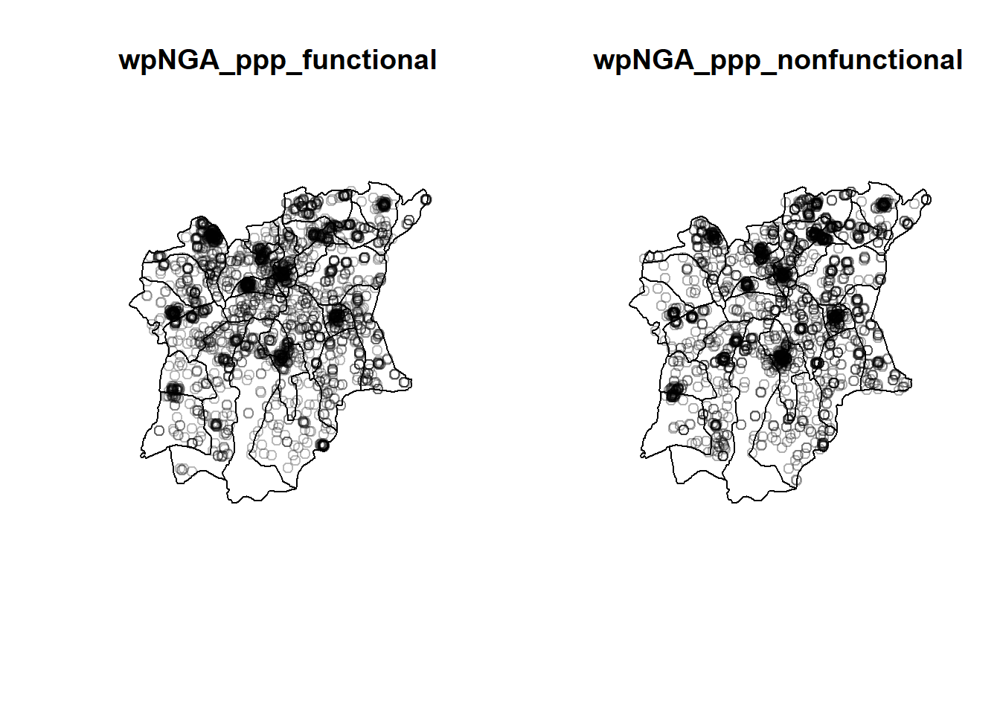
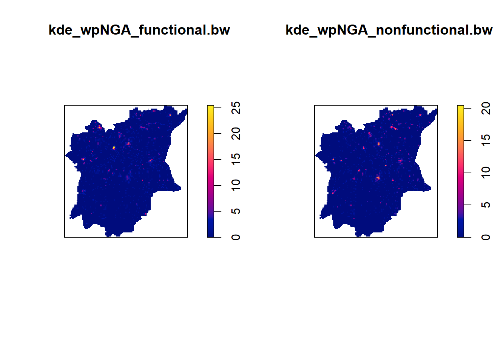
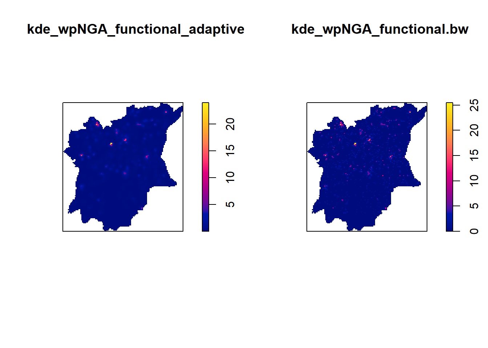

pacman::p_load(maptools, sf, raster, spatstat, tmap, tidyverse, funModeling)Take-Home Exercise 1
1 Overview
1.1 Context
Water is an essential resource for people. The health of people depends on having access to clean water. It ensures peace and security, a clean environment, a sustainable economy, and a reduction in poverty. Yet more than 40% of the world’s population lacks access to enough clean water. According to UN-Water, 1.8 billion people will be residing in nations or areas with a severe water shortage by 2025. Water scarcity is a serious threat to several sectors, including food security. Around 70% of the world’s freshwater resources are used for agriculture.
1.2 Objectives
Discover the geographical distribution of functional and non-function water points and their co-locations if any in Osun State, Nigeria.
1.3 Task
The specific tasks of this take-home exercise are as follows:
Exploratory Spatial Data Analysis (ESDA)
Derive kernel density maps of functional and non-functional water points. Using appropriate tmap functions
Display the kernel density maps on openstreetmap of Osub State, Nigeria.
Describe the spatial patterns revealed by the kernel density maps. Highlight the advantage of kernel density map over point map.
Second-order Spatial Point Patterns Analysis
With reference to the spatial point patterns observed in ESDA:
Formulate the null hypothesis and alternative hypothesis and select the confidence level.
Perform the test by using appropriate Second order spatial point patterns analysis technique.
With reference to the analysis results, draw statistical conclusions.
Spatial Correlation Analysis
Confirm statistically if the spatial distribution of functional and non-functional water points are independent from each other.
Formulate the null hypothesis and alternative hypothesis and select the confidence level.
Perform the test by using appropriate Second order spatial point patterns analysis technique. With reference to the analysis results, draw statistical conclusions.
1.4 Data
| Type | Name | Format | Description | Source |
|---|---|---|---|---|
| Aspatial | WPdx+ | csv | Locations of water points | WPdx Global Data Repositories |
| Geospatial | geoBoundaries | SHP | geoBoundaries data of Nigeria | geoBoundaries |
| 1 | 1 | 1 | 1 | 1 |
2 Importing and loading packages
For this exercise, we’ll be using the following packages:
sf: Manage and process vector-based geospatial data in R
spatstat: Perform 1st & 2nd spatial point patterns analysis + kernel density
raster: Reads, writes, manipulates, analyses, model of grid spatial data convert image output generate by spatstat into raster format
maptools: Convert Spatial objects into ppp format of spatstat
tmap: plotting cartographic quality static point patterns maps or interactive maps by using leaflet API
tidyverse:
funModeling:
We will be using p_load function of pacman package to install and load required packages.
3 Spatial Data Wrangling
3.1 Data Geospatial
We will be using st_read function to read our geospatial data.
NGA <- st_read(dsn = "data/geospatial/",
layer = "nga_admbnda_adm2_osgof_20190417")%>%
st_transform(crs = 26392)Reading layer `nga_admbnda_adm2_osgof_20190417' from data source
`C:\kt-x\is415-GAA\Take-Home_Ex\Take-Home_Ex01\data\geospatial'
using driver `ESRI Shapefile'
Simple feature collection with 774 features and 16 fields
Geometry type: MULTIPOLYGON
Dimension: XY
Bounding box: xmin: 2.668534 ymin: 4.273007 xmax: 14.67882 ymax: 13.89442
Geodetic CRS: WGS 84glimpse(NGA)Rows: 774
Columns: 17
$ Shape_Leng <dbl> 0.2370744, 0.2624772, 3.0753158, 2.5379842, 0.6871498, 1.06…
$ Shape_Area <dbl> 0.0015239210, 0.0035311037, 0.3268678399, 0.0683785064, 0.0…
$ ADM2_EN <chr> "Aba North", "Aba South", "Abadam", "Abaji", "Abak", "Abaka…
$ ADM2_PCODE <chr> "NG001001", "NG001002", "NG008001", "NG015001", "NG003001",…
$ ADM2_REF <chr> "Aba North", "Aba South", "Abadam", "Abaji", "Abak", "Abaka…
$ ADM2ALT1EN <chr> NA, NA, NA, NA, NA, NA, NA, NA, NA, NA, NA, NA, NA, NA, NA,…
$ ADM2ALT2EN <chr> NA, NA, NA, NA, NA, NA, NA, NA, NA, NA, NA, NA, NA, NA, NA,…
$ ADM1_EN <chr> "Abia", "Abia", "Borno", "Federal Capital Territory", "Akwa…
$ ADM1_PCODE <chr> "NG001", "NG001", "NG008", "NG015", "NG003", "NG011", "NG02…
$ ADM0_EN <chr> "Nigeria", "Nigeria", "Nigeria", "Nigeria", "Nigeria", "Nig…
$ ADM0_PCODE <chr> "NG", "NG", "NG", "NG", "NG", "NG", "NG", "NG", "NG", "NG",…
$ date <date> 2016-11-29, 2016-11-29, 2016-11-29, 2016-11-29, 2016-11-29…
$ validOn <date> 2019-04-17, 2019-04-17, 2019-04-17, 2019-04-17, 2019-04-17…
$ validTo <date> NA, NA, NA, NA, NA, NA, NA, NA, NA, NA, NA, NA, NA, NA, NA…
$ SD_EN <chr> "Abia South", "Abia South", "Borno North", "Federal Capital…
$ SD_PCODE <chr> "NG00103", "NG00103", "NG00802", "NG01501", "NG00302", "NG0…
$ geometry <MULTIPOLYGON [m]> MULTIPOLYGON (((548795.5 11..., MULTIPOLYGON (…NGA |> filter(ADM1_EN == "Osun")Simple feature collection with 30 features and 16 fields
Geometry type: MULTIPOLYGON
Dimension: XY
Bounding box: xmin: 176503.2 ymin: 331434.7 xmax: 291043.8 ymax: 454520.1
Projected CRS: Minna / Nigeria Mid Belt
First 10 features:
Shape_Leng Shape_Area ADM2_EN ADM2_PCODE ADM2_REF ADM2ALT1EN
1 1.7951405 0.062436080 Aiyedade NG030001 Aiyedade <NA>
2 0.7101503 0.024818478 Aiyedire NG030002 Aiyedire <NA>
3 0.9199564 0.038002894 Atakumosa East NG030003 Atakumosa East <NA>
4 0.8502782 0.030445804 Atakumosa West NG030004 Atakumosa West <NA>
5 0.5212768 0.012213340 Boluwaduro NG030005 Boluwaduro <NA>
6 0.6088930 0.011827501 Boripe NG030006 Boripe <NA>
7 0.4714403 0.008343638 Ede North NG030007 Ede North <NA>
8 0.5660235 0.017623677 Ede South NG030008 Ede South <NA>
9 0.8273123 0.022026327 Egbedore NG030009 Egbedore <NA>
10 1.1304849 0.029791275 Ejigbo NG030010 Ejigbo <NA>
ADM2ALT2EN ADM1_EN ADM1_PCODE ADM0_EN ADM0_PCODE date validOn
1 <NA> Osun NG030 Nigeria NG 2016-11-29 2019-04-17
2 <NA> Osun NG030 Nigeria NG 2016-11-29 2019-04-17
3 <NA> Osun NG030 Nigeria NG 2016-11-29 2019-04-17
4 <NA> Osun NG030 Nigeria NG 2016-11-29 2019-04-17
5 <NA> Osun NG030 Nigeria NG 2016-11-29 2019-04-17
6 <NA> Osun NG030 Nigeria NG 2016-11-29 2019-04-17
7 <NA> Osun NG030 Nigeria NG 2016-11-29 2019-04-17
8 <NA> Osun NG030 Nigeria NG 2016-11-29 2019-04-17
9 <NA> Osun NG030 Nigeria NG 2016-11-29 2019-04-17
10 <NA> Osun NG030 Nigeria NG 2016-11-29 2019-04-17
validTo SD_EN SD_PCODE geometry
1 <NA> Osun West NG03003 MULTIPOLYGON (((213526.6 34...
2 <NA> Osun West NG03003 MULTIPOLYGON (((212542.6 40...
3 <NA> Osun East NG03002 MULTIPOLYGON (((265746.8 37...
4 <NA> Osun East NG03002 MULTIPOLYGON (((248871.4 40...
5 <NA> Osun Central NG03001 MULTIPOLYGON (((266092.2 43...
6 <NA> Osun Central NG03001 MULTIPOLYGON (((255072.5 43...
7 <NA> Osun West NG03003 MULTIPOLYGON (((236386.9 41...
8 <NA> Osun West NG03003 MULTIPOLYGON (((236386.9 41...
9 <NA> Osun West NG03003 MULTIPOLYGON (((220756 4317...
10 <NA> Osun West NG03003 MULTIPOLYGON (((214422.1 42...3.2 Importing WPdx
We will be using read_csv() function to read the WPdx file and using filter function to only show Nigeria country data.
wp_nga <- read_csv("data/aspatial/WPdx.csv") %>%
filter(`#clean_country_name` == "Nigeria")3.2.1 Convert water point data into sf point features
wp_nga$Geometry = st_as_sfc(wp_nga$`New Georeferenced Column`)
wp_nga# A tibble: 95,008 × 71
row_id `#source` #lat_…¹ #lon_…² #repo…³ #stat…⁴ #wate…⁵ #wate…⁶ #wate…⁷
<dbl> <chr> <dbl> <dbl> <chr> <chr> <chr> <chr> <chr>
1 429068 GRID3 7.98 5.12 08/29/… Unknown <NA> <NA> Tapsta…
2 222071 Federal Minis… 6.96 3.60 08/16/… Yes Boreho… Well Mechan…
3 160612 WaterAid 6.49 7.93 12/04/… Yes Boreho… Well Hand P…
4 160669 WaterAid 6.73 7.65 12/04/… Yes Boreho… Well <NA>
5 160642 WaterAid 6.78 7.66 12/04/… Yes Boreho… Well Hand P…
6 160628 WaterAid 6.96 7.78 12/04/… Yes Boreho… Well Hand P…
7 160632 WaterAid 7.02 7.84 12/04/… Yes Boreho… Well Hand P…
8 642747 Living Water … 7.33 8.98 10/03/… Yes Boreho… Well Mechan…
9 642456 Living Water … 7.17 9.11 10/03/… Yes Boreho… Well Hand P…
10 641347 Living Water … 7.20 9.22 03/28/… Yes Boreho… Well Hand P…
# … with 94,998 more rows, 62 more variables: `#water_tech_category` <chr>,
# `#facility_type` <chr>, `#clean_country_name` <chr>, `#clean_adm1` <chr>,
# `#clean_adm2` <chr>, `#clean_adm3` <chr>, `#clean_adm4` <chr>,
# `#install_year` <dbl>, `#installer` <chr>, `#rehab_year` <lgl>,
# `#rehabilitator` <lgl>, `#management_clean` <chr>, `#status_clean` <chr>,
# `#pay` <chr>, `#fecal_coliform_presence` <chr>,
# `#fecal_coliform_value` <dbl>, `#subjective_quality` <chr>, …3.2.2 Convert this df into sf object
wp_sf <- st_sf(wp_nga, crs=4326)
wp_sfSimple feature collection with 95008 features and 70 fields
Geometry type: POINT
Dimension: XY
Bounding box: xmin: 2.707441 ymin: 4.301812 xmax: 14.21828 ymax: 13.86568
Geodetic CRS: WGS 84
# A tibble: 95,008 × 71
row_id `#source` #lat_…¹ #lon_…² #repo…³ #stat…⁴ #wate…⁵ #wate…⁶ #wate…⁷
* <dbl> <chr> <dbl> <dbl> <chr> <chr> <chr> <chr> <chr>
1 429068 GRID3 7.98 5.12 08/29/… Unknown <NA> <NA> Tapsta…
2 222071 Federal Minis… 6.96 3.60 08/16/… Yes Boreho… Well Mechan…
3 160612 WaterAid 6.49 7.93 12/04/… Yes Boreho… Well Hand P…
4 160669 WaterAid 6.73 7.65 12/04/… Yes Boreho… Well <NA>
5 160642 WaterAid 6.78 7.66 12/04/… Yes Boreho… Well Hand P…
6 160628 WaterAid 6.96 7.78 12/04/… Yes Boreho… Well Hand P…
7 160632 WaterAid 7.02 7.84 12/04/… Yes Boreho… Well Hand P…
8 642747 Living Water … 7.33 8.98 10/03/… Yes Boreho… Well Mechan…
9 642456 Living Water … 7.17 9.11 10/03/… Yes Boreho… Well Hand P…
10 641347 Living Water … 7.20 9.22 03/28/… Yes Boreho… Well Hand P…
# … with 94,998 more rows, 62 more variables: `#water_tech_category` <chr>,
# `#facility_type` <chr>, `#clean_country_name` <chr>, `#clean_adm1` <chr>,
# `#clean_adm2` <chr>, `#clean_adm3` <chr>, `#clean_adm4` <chr>,
# `#install_year` <dbl>, `#installer` <chr>, `#rehab_year` <lgl>,
# `#rehabilitator` <lgl>, `#management_clean` <chr>, `#status_clean` <chr>,
# `#pay` <chr>, `#fecal_coliform_presence` <chr>,
# `#fecal_coliform_value` <dbl>, `#subjective_quality` <chr>, …3.2.3 Transforming into Nigeria projected coordinate system
wp_sf <- wp_sf %>%
st_transform(crs = 26392)3.2.4 Data Cleaning
3.2.4.1 Select specific fields
Lets start by selecting specific fields that will be helpful in this exercise and select Osun state using the filter() function.
NGA <- NGA %>%
select(c(3:4, 8:9)) %>%
filter(ADM1_EN == "Osun")#tmap_mode("plot")
#qtm(nga_owin,
# fill = "wp_functional")3.2.5 EDA for Water Point Data
Next, we want to first have a visual of the water point data by creating a frequency chart.
freq(data = wp_sf,
input = '#status_clean')
#status_clean frequency percentage cumulative_perc
1 Functional 45883 48.29 48.29
2 Non-Functional 29385 30.93 79.22
3 <NA> 10656 11.22 90.44
4 Functional but needs repair 4579 4.82 95.26
5 Non-Functional due to dry season 2403 2.53 97.79
6 Functional but not in use 1686 1.77 99.56
7 Abandoned/Decommissioned 234 0.25 99.81
8 Abandoned 175 0.18 99.99
9 Non functional due to dry season 7 0.01 100.00Seems like there are several different categories of water points. With reference to Objectives, we will be focusing on Functional and Non-Functional while still taking into account of the unknown water points. But first, let’s rename this spatial frame.
wp_sf_nga <- wp_sf %>%
rename(status_clean = '#status_clean') %>%
select(status_clean) %>%
mutate(status_clean = replace_na(
status_clean, "unknown"))After that, we filter and assign the wp_functional
wp_functional <- wp_sf_nga %>%
filter(status_clean %in%
c("Functional",
"Functional but not in use",
"Functional but needs repair"))
freq(data = wp_functional,
input = 'status_clean')
status_clean frequency percentage cumulative_perc
1 Functional 45883 87.99 87.99
2 Functional but needs repair 4579 8.78 96.77
3 Functional but not in use 1686 3.23 100.00Sames goes for the Non-Functional
wp_nonfunctional <- wp_sf_nga %>%
filter(status_clean %in%
c("Abandoned/Decommissioned",
"Abandoned",
"Non-Functional due to dry season",
"Non-Functional",
"Non functional due to dry season"))
freq(data = wp_nonfunctional,
input = 'status_clean')
status_clean frequency percentage cumulative_perc
1 Non-Functional 29385 91.25 91.25
2 Non-Functional due to dry season 2403 7.46 98.71
3 Abandoned/Decommissioned 234 0.73 99.44
4 Abandoned 175 0.54 99.98
5 Non functional due to dry season 7 0.02 100.00Sames goes for the Unknown
wp_unknown <- wp_sf_nga %>%
filter(status_clean == "unknown")
freq(data = wp_unknown,
input = 'status_clean')
status_clean frequency percentage cumulative_perc
1 unknown 10656 100 1003.2.6 Performing Point-in-Polygon Count
Next, we want to find out the number of total, functional, nonfunctional and unknown water points in each LGA. First, it identifies the functional water points in each LGA by using st_intersects() of sf package. Next, length() is used to calculate the number of functional water points that fall inside each LGA.
NGA_wp <- NGA %>%
mutate(`total_wp` = lengths(
st_intersects(NGA, wp_sf_nga))) %>%
mutate(`wp_functional` = lengths(
st_intersects(NGA, wp_functional))) %>%
mutate(`wp_nonfunctional` = lengths(
st_intersects(NGA, wp_nonfunctional))) %>%
mutate(`wp_unknown` = lengths(
st_intersects(NGA, wp_unknown)))4 Geospatial Data wrangling
Moving to data wrangling on geospatial data, basically we need to convert simple feature data frame to sp spatial class.
4.1 Converting sf data frames to sp’s Spatial* class
Convert to sp object/class using as_Spatial(). Take a look at the following 2 tabs (wp_sc, NGA_sc), notice the properties is “SpatialPolygonsDataFrame”.
#wp_sc <- as_Spatial(wp_sf)
wp_sc_functional <- as_Spatial(wp_functional)
wp_sc_nonfunctional <- as_Spatial(wp_nonfunctional)
NGA_sc <- as_Spatial(NGA)#wp_sc
wp_sc_functionalclass : SpatialPointsDataFrame
features : 52148
extent : 29322.63, 1218553, 33758.37, 1092629 (xmin, xmax, ymin, ymax)
crs : +proj=tmerc +lat_0=4 +lon_0=8.5 +k=0.99975 +x_0=670553.98 +y_0=0 +a=6378249.145 +rf=293.465 +towgs84=-92,-93,122,0,0,0,0 +units=m +no_defs
variables : 1
names : status_clean
min values : Functional
max values : Functional but not in use wp_sc_nonfunctionalclass : SpatialPointsDataFrame
features : 32204
extent : 28907.91, 1209690, 33736.93, 1092883 (xmin, xmax, ymin, ymax)
crs : +proj=tmerc +lat_0=4 +lon_0=8.5 +k=0.99975 +x_0=670553.98 +y_0=0 +a=6378249.145 +rf=293.465 +towgs84=-92,-93,122,0,0,0,0 +units=m +no_defs
variables : 1
names : status_clean
min values : Abandoned
max values : Non functional due to dry season NGA_scclass : SpatialPolygonsDataFrame
features : 30
extent : 176503.2, 291043.8, 331434.7, 454520.1 (xmin, xmax, ymin, ymax)
crs : +proj=tmerc +lat_0=4 +lon_0=8.5 +k=0.99975 +x_0=670553.98 +y_0=0 +a=6378249.145 +rf=293.465 +towgs84=-92,-93,122,0,0,0,0 +units=m +no_defs
variables : 4
names : ADM2_EN, ADM2_PCODE, ADM1_EN, ADM1_PCODE
min values : Aiyedade, NG030001, Osun, NG030
max values : Osogbo, NG030030, Osun, NG030 4.2 Converting the Spatial* class into generic sp format
WHY? Because spatstat requires the analytical data in ppp object form. There is no direct way to convert a Spatial* classes into ppp object. We need to convert the Spatial classes* into Spatial object first.
Converts the Spatial* classes into generic sp objects. Take a look at the following 2 tabs (wp_sc, NGA_sc), notice the properties is “SpatialPoints” and “SpatialPolygons” respectively.
#wp_sp <- as(wp_sc, "SpatialPoints")
wp_sp_functional <- as(wp_sc_functional, "SpatialPoints")
wp_sp_nonfunctional <- as(wp_sc_nonfunctional, "SpatialPoints")
nga_sp <- as(NGA_sc, "SpatialPolygons")#wp_sp
wp_sp_functionalclass : SpatialPoints
features : 52148
extent : 29322.63, 1218553, 33758.37, 1092629 (xmin, xmax, ymin, ymax)
crs : +proj=tmerc +lat_0=4 +lon_0=8.5 +k=0.99975 +x_0=670553.98 +y_0=0 +a=6378249.145 +rf=293.465 +towgs84=-92,-93,122,0,0,0,0 +units=m +no_defs wp_sp_nonfunctionalclass : SpatialPoints
features : 32204
extent : 28907.91, 1209690, 33736.93, 1092883 (xmin, xmax, ymin, ymax)
crs : +proj=tmerc +lat_0=4 +lon_0=8.5 +k=0.99975 +x_0=670553.98 +y_0=0 +a=6378249.145 +rf=293.465 +towgs84=-92,-93,122,0,0,0,0 +units=m +no_defs nga_spclass : SpatialPolygons
features : 30
extent : 176503.2, 291043.8, 331434.7, 454520.1 (xmin, xmax, ymin, ymax)
crs : +proj=tmerc +lat_0=4 +lon_0=8.5 +k=0.99975 +x_0=670553.98 +y_0=0 +a=6378249.145 +rf=293.465 +towgs84=-92,-93,122,0,0,0,0 +units=m +no_defs 4.3 Converting the generic sp format into spatstat’s ppp format
Next, we will use as.ppp() function of spatstat to convert the spatial data into spatstat’s ppp object format.
#wp_ppp <- as(wp_sp, "ppp")
wp_ppp_functional <- as(wp_sp_functional, "ppp")
wp_ppp_nonfunctional <- as(wp_sp_nonfunctional, "ppp")
#wp_ppp
wp_ppp_functionalPlanar point pattern: 52148 points
window: rectangle = [29322.6, 1218553.3] x [33758.4, 1092628.9] unitswp_ppp_nonfunctionalPlanar point pattern: 32204 points
window: rectangle = [28907.9, 1209690] x [33736.9, 1092882.6] units#plot(wp_ppp)
plot(wp_ppp_functional)
plot(wp_ppp_nonfunctional)
#summary(wp_ppp)4.3.1 Check for duplicates
#any(duplicated(wp_ppp))
any(duplicated(wp_ppp_functional))[1] FALSEany(duplicated(wp_ppp_nonfunctional))[1] FALSEIf so, check for the number of duplicates
sum(multiplicity(wp_ppp_functional) > 1)[1] 0sum(multiplicity(wp_ppp_nonfunctional) > 1)[1] 0To resolve this problem, we will be using the jittering approach, which will add a small perturbation to the duplicate points so that they do not occupy the exact same space.
#wp_ppp_jit <- rjitter(wp_ppp,
# retry=TRUE,
# nsim=1,
# drop=TRUE)
wp_ppp_functional_jit <- rjitter(wp_ppp_functional,
retry=TRUE,
nsim=1,
drop=TRUE)
wp_ppp_nonfunctional_jit <- rjitter(wp_ppp_nonfunctional,
retry=TRUE,
nsim=1,
drop=TRUE)Then, check again for duplicates
any(duplicated(wp_ppp_functional_jit))[1] FALSEany(duplicated(wp_ppp_nonfunctional_jit))[1] FALSE4.4 Create owin object
owin object is designed to represent this polygonal region. We will be using to convert nigeria Spatial Polygon object into owin object of spatstat.
nga_owin <- as(nga_sp, "owin")plot(nga_owin)
summary(nga_owin)Window: polygonal boundary
30 separate polygons (no holes)
vertices area relative.area
polygon 1 204 766084000 0.08870
polygon 2 81 304399000 0.03520
polygon 3 97 465688000 0.05390
polygon 4 124 373051000 0.04320
polygon 5 60 149473000 0.01730
polygon 6 84 144820000 0.01680
polygon 7 50 102243000 0.01180
polygon 8 72 216002000 0.02500
polygon 9 112 269897000 0.03130
polygon 10 125 365142000 0.04230
polygon 11 83 111191000 0.01290
polygon 12 126 192557000 0.02230
polygon 13 219 904397000 0.10500
polygon 14 174 741131000 0.08580
polygon 15 81 138742000 0.01610
polygon 16 65 119452000 0.01380
polygon 17 90 280205000 0.03240
polygon 18 69 69814600 0.00808
polygon 19 69 42727500 0.00495
polygon 20 49 30458800 0.00353
polygon 21 62 263505000 0.03050
polygon 22 93 438930000 0.05080
polygon 23 87 274127000 0.03170
polygon 24 105 509979000 0.05910
polygon 25 98 292058000 0.03380
polygon 26 64 327765000 0.03800
polygon 27 133 108945000 0.01260
polygon 28 122 462169000 0.05350
polygon 29 94 109715000 0.01270
polygon 30 95 61239800 0.00709
enclosing rectangle: [176503.22, 291043.82] x [331434.7, 454520.1] units
(114500 x 123100 units)
Window area = 8635910000 square units
Fraction of frame area: 0.6134.4.1 Combining point events object and owin object
#wpNGA_ppp = wp_ppp[nga_owin]
wpNGA_ppp_functional = wp_ppp_functional[nga_owin]
wpNGA_ppp_nonfunctional= wp_ppp_nonfunctional[nga_owin]#plot(wpNGA_ppp)
plot(wpNGA_ppp_functional)
plot(wpNGA_ppp_nonfunctional)
#summary(wpNGA_ppp)5 First-order Spatial Point Patterns Analysis
5.1 Kernel Density Estimation
In this section, Computing Functional and Non-Functional water points in Osun in Nigeria.
5.1.1 Computing kernel density estimation using automatic bandwidth selection method
Baddeley et. (2016) suggested the use of the bw.ppl() algorithm because in ther experience it tends to produce the more appropriate values when the pattern consists predominantly of tight clusters. But they also insist that if the purpose of once study is to detect a single tight cluster in the midst of random noise then the bw.diggle() method seems to work best.
kde_wpNGA_functional.bw <- density(wpNGA_ppp_functional,
sigma=bw.diggle,
edge=TRUE,
kernel="gaussian")
plot(kde_wpNGA_functional.bw)
kde_wpNGA_nonfunctional.bw <- density(wpNGA_ppp_nonfunctional,
sigma=bw.diggle,
edge=TRUE,
kernel="gaussian")
plot(kde_wpNGA_nonfunctional.bw)
The density values of the output range is too small to comprehend. This is because the default unit of measurement of svy21 is in meter. As a result, the density values computed is in “number of points per square meter”.
Before moving to the next section, let’s retrieve the bandwidth used to compute the KDE layer.
#bw <- bw.diggle(wpNGA_ppp)
#bw
bw_functional <- bw.diggle(wpNGA_ppp_functional)
bw_functional sigma
252.1687 bw_nonfunctional <- bw.diggle(wpNGA_ppp_nonfunctional)
bw_nonfunctional sigma
308.2061 5.1.2 Rescalling KDE values
Using bw.diggle()
WHY? Because
wpNGA_ppp_functional.km <- rescale(wpNGA_ppp_functional, 1000, "km")
wpNGA_ppp_nonfunctional.km <- rescale(wpNGA_ppp_nonfunctional, 1000, "km")#kde_wpNGA.bw <- density(wpNGA_ppp.km, sigma=bw.diggle, edge=TRUE, #kernel="gaussian")
#plot(kde_wpNGA.bw)
kde_wpNGA_functional.bw <- density(wpNGA_ppp_functional.km,
sigma=bw.diggle,
edge=TRUE,
kernel="gaussian")
plot(kde_wpNGA_functional.bw)
kde_wpNGA_nonfunctional.bw <- density(wpNGA_ppp_nonfunctional.km,
sigma=bw.diggle,
edge=TRUE,
kernel="gaussian")
plot(kde_wpNGA_nonfunctional.bw)
5.2 Adaptive KDE
5.2.1 Computing KDE by using adaptive bandwidth
Fixed bandwidth method is very sensitive to highly skew distribution of spatial point patterns over geographical units for example urban versus rural. Hence, for this exercise, we will be using adaptive bandwidth instead.
#kde_wpNGA_adaptive <- adaptive.density(wpNGA_ppp.km, method="kernel")
#plot(kde_wpNGA_adaptive)
kde_wpNGA_functional_adaptive <- adaptive.density(wpNGA_ppp_functional.km, method="kernel")
plot(kde_wpNGA_functional_adaptive)
kde_wpNGA_nonfunctional_adaptive <- adaptive.density(wpNGA_ppp_nonfunctional.km, method="kernel")
plot(kde_wpNGA_nonfunctional_adaptive)
5.2.2 Converting KDE output into grid object
To make the KDE output is suitable for mapping purposes.
#gridded_kde_wpNGA_bw <- as.SpatialGridDataFrame.im(kde_wpNGA.bw)
#spplot(gridded_kde_wpNGA_bw)
gridded_kde_wpNGA_func_bw <- as.SpatialGridDataFrame.im(kde_wpNGA_functional.bw)
spplot(gridded_kde_wpNGA_func_bw)gridded_kde_wpNGA_nfunc_bw <- as.SpatialGridDataFrame.im(kde_wpNGA_nonfunctional.bw)
spplot(gridded_kde_wpNGA_nfunc_bw)5.2.2.1 Converting gridded output into raster
Next, we will convert the gridded kernal density objects into RasterLayer object by using raster() of raster package.
#kde_wpNGA_bw_raster <- raster(gridded_kde_wpNGA_bw)
#kde_wpNGA_bw_raster
kde_wpNGA_func_bw_raster <- raster(gridded_kde_wpNGA_func_bw)
kde_wpNGA_func_bw_rasterclass : RasterLayer
dimensions : 128, 128, 16384 (nrow, ncol, ncell)
resolution : 0.8948485, 0.9616045 (x, y)
extent : 176.5032, 291.0438, 331.4347, 454.5201 (xmin, xmax, ymin, ymax)
crs : NA
source : memory
names : v
values : -4.876249e-15, 25.49435 (min, max)kde_wpNGA_nfunc_bw_raster <- raster(gridded_kde_wpNGA_nfunc_bw)
kde_wpNGA_nfunc_bw_rasterclass : RasterLayer
dimensions : 128, 128, 16384 (nrow, ncol, ncell)
resolution : 0.8948485, 0.9616045 (x, y)
extent : 176.5032, 291.0438, 331.4347, 454.5201 (xmin, xmax, ymin, ymax)
crs : NA
source : memory
names : v
values : -4.023767e-15, 20.49412 (min, max)WHY? - crs property is NA during the convert
#projection(kde_wpNGA_bw_raster) <- CRS("+init=EPSG:3414")
#kde_wpNGA_bw_raster
projection(kde_wpNGA_func_bw_raster) <- CRS("+init=EPSG:3414")
kde_wpNGA_func_bw_rasterclass : RasterLayer
dimensions : 128, 128, 16384 (nrow, ncol, ncell)
resolution : 0.8948485, 0.9616045 (x, y)
extent : 176.5032, 291.0438, 331.4347, 454.5201 (xmin, xmax, ymin, ymax)
crs : +proj=tmerc +lat_0=1.36666666666667 +lon_0=103.833333333333 +k=1 +x_0=28001.642 +y_0=38744.572 +ellps=WGS84 +units=m +no_defs
source : memory
names : v
values : -4.876249e-15, 25.49435 (min, max)projection(kde_wpNGA_nfunc_bw_raster) <- CRS("+init=EPSG:3414")
kde_wpNGA_nfunc_bw_rasterclass : RasterLayer
dimensions : 128, 128, 16384 (nrow, ncol, ncell)
resolution : 0.8948485, 0.9616045 (x, y)
extent : 176.5032, 291.0438, 331.4347, 454.5201 (xmin, xmax, ymin, ymax)
crs : +proj=tmerc +lat_0=1.36666666666667 +lon_0=103.833333333333 +k=1 +x_0=28001.642 +y_0=38744.572 +ellps=WGS84 +units=m +no_defs
source : memory
names : v
values : -4.023767e-15, 20.49412 (min, max)Lets display the raster in cartographic quality map using tmap package.
#tm_shape(kde_wpNGA_bw_raster) +
# tm_raster("v") +
# tm_layout(legend.position = c("right", "bottom"), frame = FALSE)
tm_shape(kde_wpNGA_func_bw_raster) +
tm_raster("v") +
tm_layout(legend.position = c("right", "bottom"), frame = FALSE)
tm_shape(kde_wpNGA_nfunc_bw_raster) +
tm_raster("v") +
tm_layout(legend.position = c("right", "bottom"), frame = FALSE)
5.2.3 Spatial Point Patterns using KDE
5.2.3.1 Extract Osun
In this section, we will be comparing KDE of water points at Osun as the study area.
#osun = NGA_sc[wp_sc$clean_adm1 == "Osun",]
osun = NGA_sc
plot(osun, main = "Osun")
5.2.3.2 Converting the spatial point data frame into generic sp format
osun_sp = as(osun, "SpatialPolygons")5.2.3.3 Creating owin object
osun_owin = as(osun_sp, "owin")5.2.3.4 Combining wp points and Osun (Study Area)
wp_osun_ppp_func = wp_ppp_functional_jit[osun_owin]
wp_osun_ppp_nfunc = wp_ppp_nonfunctional_jit[osun_owin]Next, rescale() function is used to trasnform the unit of measurement from metre to kilometre.
wp_osun_ppp_func.km = rescale(wp_osun_ppp_func, 1000, "km")
wp_osun_ppp_nfunc.km = rescale(wp_osun_ppp_nfunc, 1000, "km")used to plot these four study areas and the locations of the childcare centres.
plot(wp_osun_ppp_func.km, main="Osun")
plot(wp_osun_ppp_nfunc.km, main="Osun")
5.2.3.5 Computing KDE
The code chunk below will be used to compute the KDE of these four planning area. bw.diggle method is used to derive the bandwidth of each
plot(density(wp_osun_ppp_func.km,
sigma=bw.diggle,
edge=TRUE,
kernel="gaussian"),
main="Osun")
plot(density(wp_osun_ppp_nfunc.km,
sigma=bw.diggle,
edge=TRUE,
kernel="gaussian"),
main="Osun")
6 Second-order Spatial Point Patterns
6.1 Analysing Spatial Point Process Using G-Function
In this section, the G function measures the distances between any two events and their respective nearest neighbours. Using spatstat package’s Gest() and envelope() to run a Monte Carlo simulation test, which is used to predict the probability of a range of outcomes when the possibility of random variables is present.
6.1.1 Computing G-function estimation
func_osun = Gest(wp_osun_ppp_func, correction = "border")
plot(func_osun, xlim=c(0,500))
6.1.2 Performing Complete Spatial Randomness Test
6.2 Mapping the geospatial dataset
#tmap_mode('view')
#tm_shape(NGA)+
# tm_dots()#tmap_mode('plot')6.2.0.1 Check for duplicates
#NGA$ADM1_EN[duplicated(NGA$ADM1_EN)==TRUE]Replace values
#NGA$ADM2_EN[94] <- "Bassa, Kogi"
#NGA$ADM2_EN[95] <- "Bassa, Plateau"
#NGA$ADM2_EN[304] <- "Ifelodun, Kwara"
#NGA$ADM2_EN[305] <- "Ifelodun, Osun"
#NGA$ADM2_EN[355] <- "Irepodun, Kwara"
#NGA$ADM2_EN[356] <- "Irepodun, Osun"
#NGA$ADM2_EN[519] <- "Nasarawa, Kano"
#NGA$ADM2_EN[520] <- "Nasarawa, Nasarawa"
#NGA$ADM2_EN[546] <- "Obi, Benue"
#NGA$ADM2_EN[547] <- "Obi, Nasarawa"
#NGA$ADM2_EN[693] <- "Surulere, Lagos"
#NGA$ADM2_EN[694] <- "Surulere, Oyo"Plot wp data
#tmap_mode('view')
#tm_shape(wp_sc) +
# tm_dots(alpha=0.4,
# size=0.05)6.2.1 Compare the output of using bw.diggle and bw.ppl methods
#kde_wpNGA.ppl <- density(wpNGA_ppp.km,
# sigma=bw.ppl,
# edge=TRUE,
# kernel="gaussian")
#par(mfrow=c(1,2))
#plot(kde_wpNGA.bw, main = "bw.diggle")
#plot(kde_wpNGA.ppl, main = "bw.ppl")